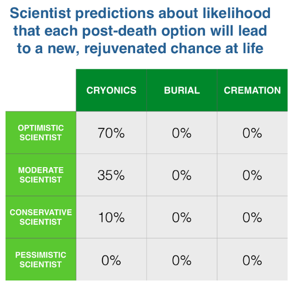

通过上半部分的介绍，我们大体上对人体冷冻过程和原理有了一定的了解，那么让我们回到最初的定义并尝试着进行一些修正：
人体冷冻学，是将那些不愿意接受自己死亡的富人冷冻起来，希望未来的人可以使他们复活的恐怖方法，这些人体冷冻狂热分子构成的团体类似于一种科学邪教
我们可以将定义中的”富”字去掉，因为通过购买人体冷冻公司提供的人身保险，年轻人也可以通过类似按揭的方式来支付人体冷冻的费用。
我们还可以将”死亡”一词替换掉，因为根据上文关于人体冷冻学对死亡的理解，我们所处理的并不是已经死亡的人，只是在现有的科技条件下被认定为死亡的，与此同时，我们也可以把”复活”一词替换掉。
我们还可以把”冷冻”一词替换掉，因为我们知道，冷冻人体所采用的并不是常规的冷冻法，而是一种玻璃化的方法来让分子处于固定不动的状态。
最后我们要把句子中的”恐怖”去掉。一个人的脑袋漂浮在液氮容器中，这种场面想来的确挺恐怖的，但是任凭肉体腐烂或者是火化成灰不也是一种恐怖的处理方式吗，所以在这里给人体冷冻使用恐怖一词存在一丝的偏见。
最终我们得到下面这样经过最终的定义：
人体冷冻，使一个将那些不愿意接受自己已经所谓的死亡的人玻璃化的过程，希望未来的人可以挽救他们，这些人体冷冻狂热分子构成的团体类似于一种科学邪教。
下面我们将要讨论的是后半句，什么是所谓的这些人体冷冻狂热份子构成的团体类似于一种科学邪教。
当你发现一个团体是属于一种边缘化的组织，这种组织研究的是如何得以永生，组织成员愿意支付大量的金钱来的到一个可能是个上千年的服务，你应该也会好奇这是不是一个邪教组织把？有一种靠谱的方法来验证这种好奇，就是阅读一些对这方面有深厚造诣的人的著作，于是我就作了一些这方面的阅读和研究。随着阅读的资料越来越多，越来越觉得人体冷冻不是那么的邪门，并不是什么歪理邪说。
那些极其不支持或不看好人体冷冻的人群一般可以根据不同的观点归为以下几类：
类型一：有一些科学家认为他们有人体冷冻无法实现的论据。
目前主流的医疗机构都没有提供人体冷冻的服务，也没有常规的保险公司提供类似的保险，政府部门也没有对这方面提供资金支持，没有医生会把人体冷冻作为医疗手段。有一部分人认为人体冷冻的复杂程度看上去就不可能实现。生物学家Ken Storey说，我们的人体有太多的器官和组织，在处理这些器官移植过程中都需要不同的冷冻条件，即便是单单的大脑，也有很多不同的区域，在细节上需要采取不同的冷冻条件。Storey指出修复一个损坏的组织是多大的工作量，一个细胞膜里就有差不多50000个蛋白质以及上亿个脂肪分子，冷冻过程很可能会打乱他们的顺序。
他们认为修复我们的大脑或是扫描大脑信息是相当大的挑战。巴西科学家Miguel Nicolelis指出，按照目前的计算水平，扫描一个人类大脑需要一百万台个人电脑同时运行十年。研究大脑的专家Michael Hendricks认为获取一个人的人格信息对于目前的科技来说还太遥远，理论上即便是在器官和组织已经死亡的前提下保存好他们所存储的信息是可能的，但是事实上，以现有的科技还没有看到任何可以从某个样本中提取出信息的可能。
人体冷冻学者们并不否认上述的观点，因为事实上，要以目前的科技来唤醒一个玻璃人还存在太多不可逾越的技术难点。但是他么提出以下几点反驳：
A）没有科学的证据可以证明人体冷冻无法实现。
B）我们无法想象未来的科技会发展进步到何种程度。
C）在动物低温学反面已经有一部分进展，比如之前提到的兔子大脑的冷冻。
人体冷冻学者并不认为因为目前缺乏完善的证据就值得大家对人体冷冻的可靠性产生怀疑。在Alcor网站上人FAQ里有提到说，以目前的科学观点来看待人体冷冻这件事情会觉得它和已知的法则并不完全的一致，但事实上人体冷冻所要实现的并不是基于现有的科学和法则，这些现阶段所依赖的一系列基础的法则说不定哪天就发生变化了。就像在1932年的时候人们认为不可能登陆月球，因为没有足够的电池可以提供够大够久的动力来脱离地心引力，1956年的时候人们普遍认为所有关于星际旅行的文章都是不靠谱的。
类型二：有一些科学家对人体冷冻的原理几乎没有什么了解就觉的这个事情是不靠谱的。
有很大一部分目前从事着常规医疗服务事业的专家们甚至认为人体冷冻会在体内的液体结冰体积增大的过程中破坏原有的身体组织。
人体冷冻学的观点并不否认这种冰冻会破坏组织的观点，但是我们这里已经知道了，我们所采用的方法不是冰冻，而是玻璃化。
很多科学家并不是十分了解人体冷冻人机制主要是因为人体冷冻学实际上算是一个跨学科的科学，如果平时没有专门研究过或许在认识上是会有所偏差。正如Alcor解释道，很多在单方面有深厚造诣的专家说他们并没有发现任何人体冷冻可行的证据，那是因为人体冷冻实际上涉及了很多不同的领域，而且人体冷冻要成功基于我们之前提到的几个大的前提，而这些前提并不完全依赖于科学技术。脱离其中任何一个前提，人体冷冻都无法成功。只有一少部分科学家清楚的知道玻璃化是个什么样的过程，更少的科学家知道玻璃化可以保存器官甚至包括大脑的细胞的结构，即便是这项技术已经公布，在非人体冷冻学界也很少有人认知。
类型三：有一部分低温生物学者不愿意和人体冷冻学有什么瓜葛，认为人体冷冻近乎于一种妖术。
低温生物学和人体冷冻学在一定程度上有一种有趣的竞争关系，实际上人体冷冻学是低温生物学的一个子集，但是在低温生物学研究者的眼里，研究人体冷冻学就像是一个天文学家在研究占星术，看上去天文学像是占星学的科学基础，但是和人体冷冻一样，从目前的角度看都不是特别的可靠。低温生物学的研究人员也不愿意别人把自己和人体冷冻学联系到一起。
类型四：他们相信即便是最后成功的把冷冻人复活了，他们也已经不是冷冻以前真实的他们了。
这可就上升到关于哲学问题什么是你，你之所以是你取决于你的身体还是你的大脑或者是你的意识？又或者说是灵魂？这其实也是我们在讨论人体冷冻的时候不可回避的问题。特别是如果我们使用的是把人脑信息上传到虚拟世界的方式的话，那么到时候那个复活的究竟还是谁？
虽然大多数人认为，最终可以使冷冻人完整的复活，但是依然没有人可以保证，很有可能最终的结果只是一个虚拟的意识的形态复活，那么我们差不多可以把这个问题作为我们的第五个前提：怎么样确保复活的我是真正的我？
类型五：认为无论人体冷冻可行与否，这都是一个不好的事情。
我们来看一看下面这些例子。
观点：人体冷冻好恶心啊？
反驳：是有一点，但是让肉体在地下腐烂就不恶心吗？
观点：人体冷冻太诡异太反常了。
反驳：在第一例器官移植成功前，人们也是这么认为的。
观点：人体冷冻是在玩弄上帝欺骗死神。
反驳：通过震颤机让心跳已经停止的人复活算是玩弄上帝或欺骗死神吗？
观点：人体冷冻是一个骗局。
反驳： 现在主流的这些大的人体冷冻公司都是非盈利性组织，他们的工作人员只被支付适量的一点报酬，如果是骗局的话获利方是谁呢？
观点：如果你有足够的钱可以能与人体冷冻的话，为什么不把这些钱投入到那些现在正需要帮助的人或事上面呢？
反驳：那么是否你有足够的钱线自己买各种人身保险或意外保险还不如把这笔钱用来帮助更需要帮助的人呢？是否你有足够的钱进行一些娱乐性消费也还不如把这些钱投入到更需要帮助的公益事业呢？那些认为把钱投入在人体人冻上的人是自私的判断都是太武断了。
观点：投入到人体冷冻研究中的资金是一种浪费，这些大量的资金已经足以让那些自负的人受到惩罚。
反驳：没有人会认为那些接受骨髓或是心脏移植的人是受骗了或是他们所接受的治疗是徒劳的。人体冷冻是一项科学试验，任何参与这个试验的人我们认为都应该像参与到其它医学试验中的志愿者一样得到尊敬。
观点：人体冷冻会带来人口过剩的大灾难。
反驳：那么由抗生素，疫苗，抑制素等带来的人口增长压力怎么处理的？单一的认为人体冷冻会带来人口问题是片面的。不论人体冷冻是否实现，随着社会的发展，人口的扩张问题就在那里，正如过去这几个世纪的增长速度。历史经验证明，随着社会积累的财富越多，人的寿命越长，人们会自己协调好人口问题。正如现在的年轻人所养育的孩子人数没有前几代人多，真正的人口问题其实来源于贫穷和疾病。
观点：我们的寿命已经够长了，我们不需要生活的更长，好好享受当下吧。
反驳：谢谢你的观点，我们不赞同。
这些反方的观点让我更加深刻的看到的要成功的实现人体冷冻和复活是有多大的难度，我们的科技还有很长的路要走，或许我们的有生之年已经无法看见他实现的那一天。同时我又对人体冷冻的成功实现充满了信心，相信终有一天这项技术会改变世界。正如历史上无数次发生的人类改变世界的事件一样，在事件发生前人们总是认为是不可思议的，只要不能被证明完全不可能实现，那么我们其实就有理由相信未来的科技或许可以达到这样的水准，我们需要的只是足够的时间。
其实对于人体冷冻支持者来说，他们所持有的这种为什么不试一试呢？这样的观点让那些持相反态度的人就很难反驳。
正如资深的人体冷冻科学家Ralph Merkle所说，对于人体冷冻是否可行的最好回答是：临床实验正在进行，一个世纪后再回过头来我们会给你看看最终的结果。对于那些无法活到那时来见证结果的人来说，问这样的问题其实就是强迫我们在临床实验结果还没有出来之前就给出答案。对此我们只能告诉他们，我们不知道最终是否能成功，但是我们会尽最好的尝试，只要没有被认为是不可能的，我们都要一试。
另外一点给我印象颇深的是那些人体冷冻学者在谈到人体冷冻的相关问题的时候都是非常的有理，有力，有节，他们对于他们已知的内容和未知的内容都抱着一种实事求是的态度，在和人交谈过程中也都非常的谦逊。他们会欣然的承认摆在他们面前的问题和这个研究领域的一些不足，他们通过严谨的实验来验证每一个可能得出的结论。尽管目前主流的医学界普遍对人体冷冻缺乏支持，很多的科学家还是愿意热切的投入到这项事业中。
回到我之前对人体冷冻的定义：
人体冷冻，使一个将那些不愿意接受自己已经所谓的死亡的人玻璃化的过程，希望未来的人可以挽救他们。
在这个句子里，我最后要讨论的部分是”那些不愿意接受自己已经所谓的死亡的人“，对于句子里的这一部分定义或许带略微的带有一丝偏见，正如有些人会觉得那些声称要战胜死亡的人好二啊。除了这种观念上的藐视，我们大多数人也无法轻易的接受那种把人体储藏在液氮容器里那种有点恶心的状态。还有的人认为想以这种方式继续活下去的人太不知足了，好好的珍惜当下不就什么都够了吗。
我其实主观上并不对人体冷冻持藐视态度，但是在我研究的初期对于人体冷冻所持的态度曾经有所动摇，直到我发现我自己在看到亿万富翁Peter Thiel也加入了人体冷冻行列的新闻并对此也存有一定的偏见的时候，我才想开始重新的思考。
重新的思考如何将死亡理解成一个过程而不是一个事件，重新思考我们的生命在于我们意识所存在的时间而不是肉体，重新思考人类健康的延续和时间的关系，我可以想象到未来的人如何看待现在的人们对于生理上的这一系列恶化所感受到的无助和无奈。
我们目前所生活的是这样一个阶段，对于未来的科技已经有一丝曙光从窗户照射进来，现在的我们已经可以清楚的认识到什么是死亡，但是我们的能力还不足以让我们摆脱死亡。我们把死亡看作是神一般的存在，所谓阎王叫你三更死不会留你到五更，在过去的漫长岁月中我们从来没有战胜过他，我们只能在这种不可抗拒的力量下臣服。未来的可以战胜死亡的人们回过头来看现在的我们以及现在的心理，他们会同情我们，就像我们同情原始的人类会用活人进行祭祀以求神灵保佑一般。
这也正是为什么在无法战胜死亡的今天，我们会认为可以和病魔抗争到最后一秒是光荣的，有一分良好的事业好好的生活着是美好的，但是当我们得知有朝一日我们可以战胜死亡，我们并不能马上的接受，因为太多年以来我们都已经习惯了臣服于死亡之下。正是这样的传统观念的支配下，才有了上面的那些对于人体冷冻强烈认同和不敢苟同的两类观点。这两种观点的分歧主要体现在以下两点：
1)人体冷冻学观点认为死亡是一个过程，很多现阶段被认为已经死亡的人其实并不是真正的死亡，他们所做的就是把这样的人转移到未来的医院进行救治，而冷冻只是转移过程中所采用的一种人体保存方法，正如移植器官时对器官的保存，这并不是在挑战死神，而是采用一种新的方法来挽救人的生命。而大多数主流的观点认为死亡就是一个事件一个结果，在他们看来人体冷冻所要做的事情就是让已经死去的人复活，这就是在和死神做对。人体冷冻学者看来我们为那些战胜癌症的勇士欢呼却不能理解采用人体冷冻的方式作为一种医疗手段是不合理的。
2)人体冷冻学死亡并不是一个必然，而是一个值得去攻克的难题。在他们看来人体都是由一定顺序的原子所构成的，如果我们的科技发达到可以对原子进行微观的操作，那么就可以替换那些坏死的部分。而大多数主流的观点认为死亡是必然的自然规律，如果有人说他想要战胜死亡或者说可以逃避死亡的结局，那么他们会嘲笑他。
当仔细的理解人体冷冻学所持有的一系列观点后，我突然意识到，他们所研究的不正如我们研究为什么地震会发生和如何对地震进行预测一样具有挑战吗？当我对亿万富翁Peter Thiel存有偏见的时候，我意识到如果这样的话，我自己不正如那些因为害怕得罪上帝和神明而把像布鲁诺这样有着先进思想的科学家绑在柱子上烧死的古人一样的无知吗？
我原本只打算写一篇简短的文章来简单的介绍一下人体冷冻学，以此作为讨论今日的那些独自研究科学的理想主义者是来日的科学偶像的一个例子。但是在研究的同时，也进一步引发了我对生命结束本身的想法的大转变。一开始，我的思考的问题是，人体冷冻是一件不错的事情吗？但是到最后我的问题是，对于一个垂死的孩子我们有什么理由不让他尝试一下人体冷冻？未来的人会不会觉得我们现如今拒绝给这样的孩子进行冷冻而导致其死亡归因于家长们封建的思想？
很快的我发现人体冷冻已经不只是一个对不对和应不应该去做的事情，而是一个实实在在存在着的一个正确的选择。
Alcor在这一点上是这样说的， 对于人体冷冻道德上的支持标准是我们不会轻易的放弃治疗任何一个有可能得救的病人。这也正是我们现在所看到的那些危重的已经丧失自主意识的病人会被送到医院进行救治，即便是他们最后无法醒来，也会得到持续不断的照顾，所以记住这一点，在道德上即使存在万分之一的希望我们也会继续进行治疗。
当我们接受了这样的观点以后，反过来看我们会觉得那些现在主流的不接受人体冷冻的观点是疯狂的。
当23岁的Kim Suozzi知道自己将无法避免的死于癌症的时候，她签署了人体冷冻协议，在她看来这只不过类似于一种新的治疗手段，讲不定最后真的可以救活自己呢，但是她的父亲却是极力的反对，周围的人也不理解甚至嘲笑她，认为事情已经荒诞到足以上今日头条了。但是设身处地的想一想，当你站在死亡的悬崖边缘，即将坠入无边的死亡深渊的时候，突然悬崖上方掉落了一根绳子，抓住它，或许就有被拉上去的希望，那么你的选择是抓还是不抓呢？
这正如我们文章的一开始，发生空难的时候你是选择在座位上等死还是愿意去尝试着跳伞来获取一线生机呢？
可以告诉你我的决定是毫无疑问的，选择拿一个降落伞并义无反顾的跳下去。之所以做这样的选择，我认为有以下三点理由。
1)我热爱生命。一直阅读我的博客的人可以觉得我是一个轻度的对死亡有所向往的人，在博客中55次谈论到和死亡有关的话题。但仔细的阅读和体会你会发现实际上我也是害怕死亡的。我热爱我的生活，喜欢做我所从事的阅读和研究，深受着我的家人和朋友。同时我希望看到更多的将来，我想看到我们弄清了费米定律，看到我们发现了什么是暗物质，看到我们人类移民火星，看到人工智能可以帮我们完成各种任务，我希望看到23世纪是什么样子，那时候用的手机有多么的酷炫。活着比死亡要有意思太多了，毕竟我们的终极是死亡，所以从这一点上看，活着越长越好。
2) 看下面这个图表.

科学家基于三种死后处理方式冷冻、土葬，火化所作的调查得到对重生可能性判断。
3)希望。我有的时候羡慕那些有着虔诚宗教信仰的人，他在临死前所想的或许是那些可能去到的另一个世界所拥有的生活，死亡对于他们来说或许只是闭了闭眼，重新睁开的时候自己已经身处天堂。无论人体冷冻靠谱与否，至少对于我们来说这就是一个希望，我们有时候并不一定要有一个实实在在的东西，而只是一句话，听说这东西有可能实现哦？这样的感觉就会很美妙，所以我们总是说人是活在希望里的，没有了希望活着也是死了。
有些人可以会和我做一样的选择使用降落伞，而肯定也有一部分人认为这样的选择太二了。没关系，不管你有没有意识到，实际上你所做的选择就取决于你对未来的想法和计划，你可以选择放弃挣扎拥抱死亡，那么只需要在飞机坠毁的时候安然的呆在你的位置上。这并不意味着这是一个错误的选择，每个人有不同的想法和价值观，每个人都有自己独立思考和选择自己的生活状态的权利。那么如果你选择的是跳伞，那么就请做迎接一切可以的心理准备吧。
最后再来看一个术语：冷冻延迟现象
这个术语的意思是，你越年轻所需要进行人体冷冻的可能性就越小。一般人特别是年经人都会认为不着急，等我快要死的时候我再考虑是不是需要被冷冻，到时候再签署人体冷冻协议也不晚，但实际上不管是什么年纪都有可能遭遇不测，如果一直拖延着没有签署人体冷冻协议，那么讲不定就错过了这个机会了，到时候后悔就来不及啦。你可以尝试着像我一样把这件事情计划起来，就像家里要准备一些常用的药一样，当真的哪天感觉不舒服了，我们会比较淡定，因为我们有药哈。
正如Dylan Thomas所说的：
不要温和地走进那个良夜,
白昼将尽,暮年仍应燃烧咆哮;
怒斥吧,怒斥光的消逝。